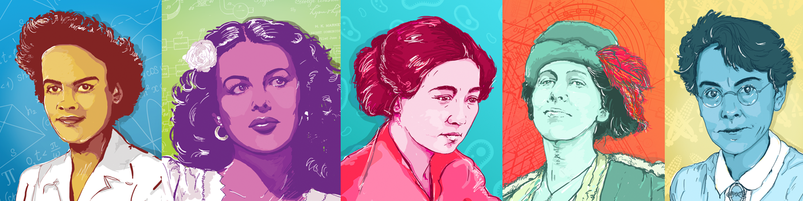

WOMEN IN STEM
(Science, Technology, Engineering And Mathematics)
Women represent 50% of the US population. Yet, women make up less than one third of the nation’s STEM workforce.
So
Our mission is to create a community of professional women in STEM where they can share experiences, knowledge, and career opportunities.

We want to make women in STEM visible. We seek to inspire new generations and empower female professionals in these areas, with the goal of creating
a community and promoting gender equality in the scientific and technological fields. By providing women with this information and resources,
our team seeks to challenge gender stereotypes, encourage scientific and technological interest, and contribute to developing a more inclusive society.

The contribution of women to STEM goes beyond filling quotas; it is about enriching the field with diverse perspectives and fostering innovation.
Women have been at the helm of groundbreaking research, including advancements in cancer immunotherapy, which have saved countless lives. Moreover,
studies have consistently shown that diverse teams are more creative, better at solving problems, and produce more effective and inclusive solutions.
For a more balanced gender representation in STEM, it is essential to:
-Highlight Success Stories
-Sharing the achievements of women in STEM serves as
a powerful motivation for young women considering these fields.
MEET THE HEROINES